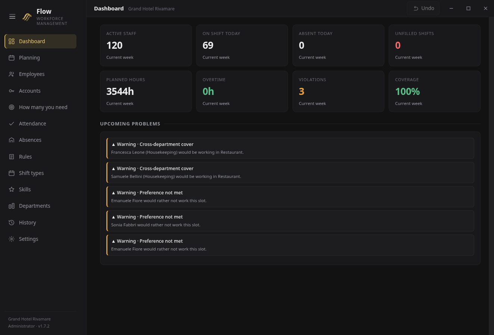
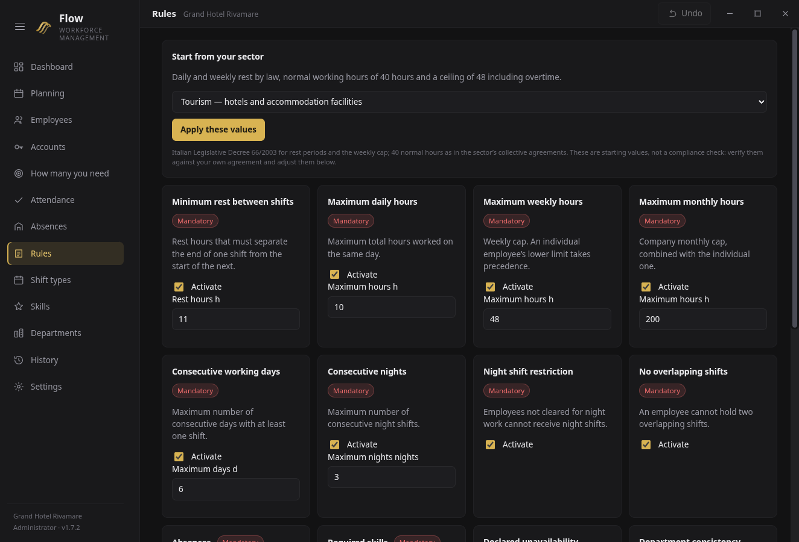

Spazio al recupero.
Pianifica tenendo conto dei riposi, insieme agli altri vincoli della tua organizzazione.
Flow · Pianificazione dei turni
Organizza il lavoro tenendo conto di riposi, ore e competenze. Flow è il software per le aziende che lavorano su turni.
Fino a 50 dipendenti durante la prova. Nessuna carta di credito.
Una pianificazione deve tenere insieme le esigenze del servizio e quelle delle persone. Flow considera riposi, ore e competenze e rende comprensibili le scelte.
Pianifica tenendo conto dei riposi, insieme agli altri vincoli della tua organizzazione.
Considera le ore nella costruzione del programma dei turni della squadra.
Tieni conto delle competenze necessarie quando organizzi la copertura dei turni.
Dalla visione d’insieme alle regole della pianificazione: esplora le schermate di Flow e osserva come si organizza il lavoro.


Nomi, turni e dati aziendali mostrati negli screenshot sono fittizi e utilizzati esclusivamente a scopo dimostrativo.
La licenza Flow
55 €
+ IVA per dipendente attivo all’anno
Postazioni illimitate. Prodotto riservato a clienti professionali.
| Dipendenti attivi | Totale annuo |
|---|---|
| 20 | 1.100 € |
| 50 | 2.750 € |
| 100 | 5.500 € |
Flow richiede Windows 10 o 11 a 64 bit. Il pacchetto include anche l’app per i dipendenti, compatibile con Android 5.1 o successivo. Consulta la guida inclusa per la configurazione.
Scarica Flow, estrai la cartella e segui la guida inclusa per iniziare. Trovi le istruzioni passo passo nel file README.
La licenza costa 55 € + IVA all’anno per dipendente attivo. Si contano i dipendenti, non i computer: le postazioni sono illimitate.
Nel pacchetto, le cartelle Documentation/Legal ITA e Documentation/Legal EN contengono condizioni di licenza, informativa privacy, accordo art. 28 GDPR e informazioni legali. Consultale prima di utilizzare Flow.
Una panoramica più diretta dell’applicazione, per osservare l’interfaccia di Flow e alcune delle sue funzioni più da vicino.
Flow 1.7.2 · Windows
Scarica Flow e valuta se è adatto al lavoro della tua squadra.
Scarica Flow per WindowsArchivio ZIP · circa 196 MB · 30 giorni di prova
Da telefono? Apri questa pagina sul computer Windows su cui vuoi usare Flow.
{kind=link}
{kind=link}